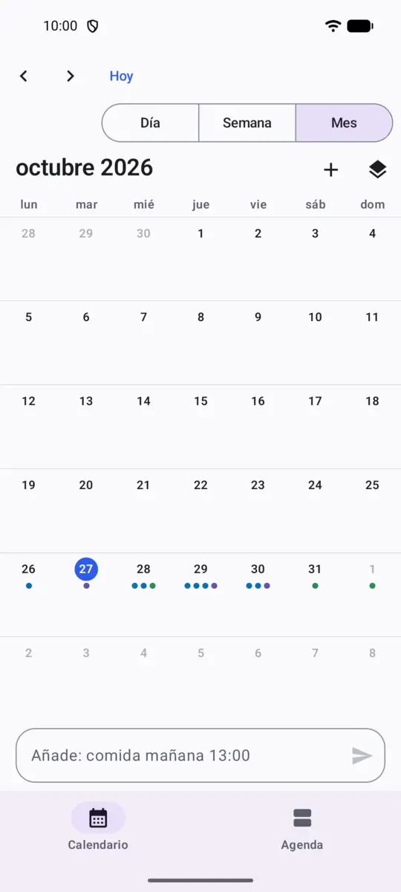

Aprovecha toda la pantalla
En una tablet ves la semana entera con un panel de «Hoy» al lado, y los detalles de un evento junto a la cuadrícula cuando lo eliges. En el móvil, la semana muestra tres días. Las ventanas anchas tienen un menú lateral con nombres, y puedes arrastrar la separación entre paneles.
El teclado y el ratón funcionan en todas partes: atajos para cada acción, menú con el botón derecho, Ctrl+rueda para ampliar las horas y Ctrl+P para imprimir la semana o guardarla en PDF.

Pensado para plegables
Medio abierto como un libro, la semana queda a un lado de la bisagra y el día de hoy o el evento elegido al otro. Apoyado en la mesa, la semana va arriba y los controles abajo. Nada se dibuja sobre el pliegue, y al plegar o desplegar sigues donde estabas.
En la pantalla exterior de un plegable tipo concha se convierte en un día sencillo. En tablets y plegables puede abrir una segunda ventana a su lado, y puedes arrastrar eventos de una a otra.
Añade eventos escribiendo
Escribe Gimnasio cada lunes y jueves a las 19:00
o Café con Ana esta tarde
. Lo que ha entendido se resalta mientras escribes, y una línea te muestra qué se va a guardar antes de pulsar Intro. Si no pones hora, busca tu primera hora libre.
Entiende español de verdad, no traducido, y también inglés. Todo se procesa en tu móvil.

Tus calendarios, en tu móvil
Activa los calendarios del teléfono y Quickspan muestra los que ya tienes, como Google o Exchange, junto a los suyos. Puedes añadir, editar, mover y borrar eventos en ellos, y la cuenta del móvil los sincroniza como siempre.
Quickspan solo pide acceso al calendario cuando lo activas, y funciona sin él.

Privado desde el diseño
- Sin permiso de internet. La app no puede enviar tus eventos a ningún sitio. Lo puedes comprobar en la lista de permisos de su ficha en Google Play.
- Sin cuenta, sin anuncios, sin estadísticas. No hay que registrarse y nada te rastrea.
- Los calendarios del móvil siguen con sus cuentas. Si muestras un calendario de Google o Exchange, se sigue sincronizando a través de tu móvil, no de nosotros.
Lo que (todavía) no hace
- No sincroniza por sí mismo entre dispositivos. Para eso, usa un calendario de Google o Exchange.
- No tiene zonas horarias: las horas son las de tu móvil.
- El añadido rápido solo entiende español e inglés.
Cuéntanos qué echas en falta: support@quickspan.app